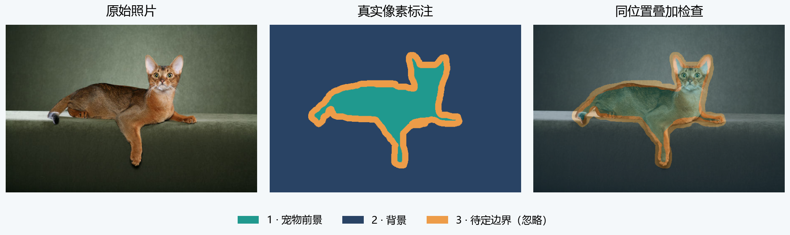

培养方案与待遇
KYDW新成员培养与发展指南
了解考察与考核、成员支持、科研路径、核心成员条件及论文署名。
Python 基础、猫狗识别、图像分割、图像翻译与成果表达。
吴恩达教授的 AI Python for Beginners 面向编程初学者，结合视频、代码示例与在线练习，讲解变量、函数、循环、数据结构和文件处理，并介绍如何借助 AI 解释代码、排查错误。
后续图像项目会直接使用变量、列表、循环、函数和文件路径。学习这门课时，亲手运行并修改这些代码；能看懂一个函数接收什么、返回什么，并读懂报错所在的行，就可以接着阅读 01。暂时不熟悉的语法可回到课程对应示例查阅。
学习课程 ↗

文件名：KYDW_姓名_培训考核.zip
文件夹：01_猫狗识别、02_图像分割、03_图像翻译。每个项目的 Notebook 或程序、主要结果放进对应文件夹；PPT、短报告和学习海报也分别放在所属项目内。
猫狗项目交可编辑的流程图与结果页；分割项目交 Word 和 PDF 短报告；图像翻译项目交 PPTX 和 PDF 学习海报。图像翻译的代码与海报不提供标准答案。
了解考察与考核、成员支持、科研路径、核心成员条件及论文署名。